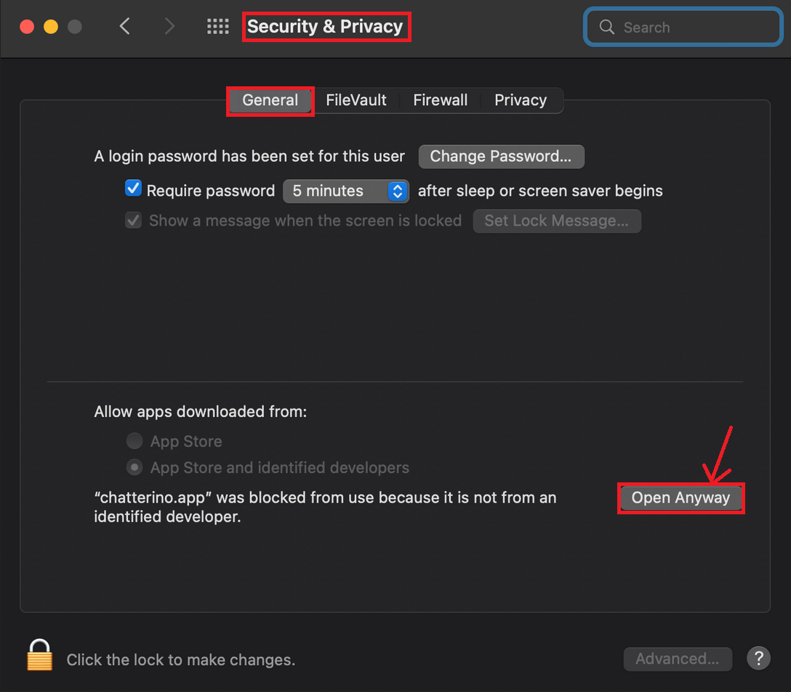
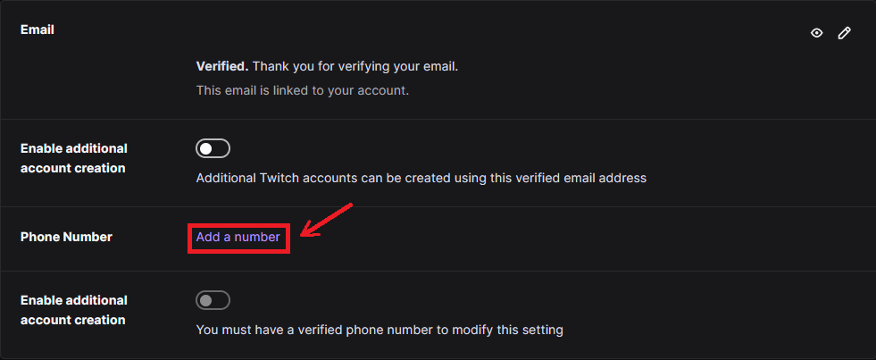
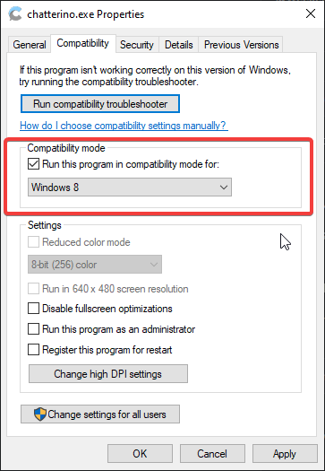

Help
Having issues with Chatterino or need general assistance? Check the below troubleshooting below corresponding to your operating system for assistance!
Please search for your problem in the GitHub Issues. If there is no such issue, please create a new one. If you have more questions, feel free to join the Discord.
Basic troubleshooting¶
Prior to starting on the below, you should first try the basic troubleshooting steps listed here. These steps can resolve a variety of issues:
- Ensure that your Chatterino is up to date.
- [Windows] Try running Chatterino in administrator mode.
- [Windows] Ensure that you have the x64 Visual C++ Redistributables installed AND have restarted your PC after installation:
- x64: https://aka.ms/vs/16/release/vc_redist.x64.exe
- Chocolatey:
choco install vcredist140
- [MacOS] Open
System Preferencesgo toSecurity & Privacy [General Tab]and selectOpen Anywayor see this Apple support article. 
I am having an issue with the Chatterino extension¶
Chatterino extension issues should be posted here.
Chatterino not starting/Crashing upon startup¶
- [Windows] Try running Chatterino in administrator mode.
- [Windows] Adding Chatterino to your anti-virus/malware whitelist.
- [Windows] If nothing else works, try resetting your settings using the
Fresh Installoption in the installer.
Does using Chatterino accumulate Twitch channel points?¶
Unfortunately not. This is a limitation due to Twitch using internal APIs for channel points.
This will however work with most chatbots, as they simply take you being connected to chat as "watching the stream".
Can I use Chatterino as my chat overlay for my stream?¶
You definitely can, but it's not recommended. We suggest using a service similar to KapChat.
Why are my messages being sent in webchat, but not in Chatterino?¶
There's a few things to cover here:
- If your message is not sent in Chatterino, it is likely not sent in webchat either. Webchat renders messages whether they are sent or not, Chatterino will only render the message if it is accepted by the server.
- If you're trying to type in a chat where there are a lot of active chatters, then your message may be dropped by Twitch's chat servers (due to the volume).
- If an alt account has been banned in that chat, you have likely been shadowbanned by Twitch in that channel. Which prevents any of your other accounts from speaking in that channel.
- If you have spammed too much in another chat, you have likely been temporarily shadowbanned by Twitch in channels where you are not: Subscribed, VIP or Moderator.
If all else fails, you may be having connection issues to Twitch or your network may be blocking the necessary IRC ports in order to connect.
Chatterino is repeatedly disconnecting from Twitch chat¶
If you are having troubles with Chatterino repeatedly connecting/disconnecting, it is likely due to the large amount of channels you are connected to. The maximum channel limit is usually around the 100 mark, but may differ from user to user. Try closing splits in Chatterino in order to fix this.
I am unable to send whispers from Chatterino¶
You may be unable to send a whisper via Chatterino for the following reasons:
You don't have a verified phone number attached to your Twitch account.¶
Twitch requires users to have a verified Phone Number attached to their account to send whispers from Chatterino.
NOTE: A Verified Phone Number is NOT the same thing as Two-Factor Authentication.
You can add a phone number to your account in Twitch Settings.

You are on a Chatterino version older than 2.4.0:¶
On February 24th 2023 Twitch shutdown the service old versions of Chatterino used to send whispers. You must update to 2.4.0 or newer to continue sending whispers.
FFZ/BTTV emotes are not working¶
You need to be logged in to see emotes. Try hitting F5 once to manually refresh the emotes.
Chatterino only makes a connection to the necessary APIs to fetch these emotes, if you are still having issues fetching them, then your network may be blocking requests to those APIs.
I have link information turned on, but am unable to see the information when hovering over a link¶
- The server (braize) used to fetch the link information may be down. Braize uptime can be found here.
- Your network may be having issues connecting to braize. Try restarting your PC and router.
How do I get the supporter badge?¶
Donate €10 to fourtf here (can be done in multiple donations). You should get your badge automatically after about 5 minutes. Make sure to restart Chatterino if you can't see the badge.
If you still can't see it, ask fourtf on Chatterino Discord for assistance.
How do I disable the supporter badge?¶
Log in to the badge manager and click on Disable My Chatterino Badge.
Login expired error¶
If you're getting the Login expired for user <user>! Try adding your account again. error, simply re-add your account and it will start working again.
How do I add Chatterino as an OBS dock?¶
This is not natively supported, but there is a workaround:
- Add a dock into OBS for standard Twitch chat.
- Turn on
Always on topin Chatterino. - Click the 3 dots up the top of a channel split and click
Popup. - Move and resize the chat to overlay on top of the standard Twitch chat.
What is nightly and how to use / install it¶
Overview¶
Nightly is a "developer release" of Chatterino. It is released every time there's a new change added to source code. It includes some features that may not be available in the latest stable release.
Installation¶
- Go to nightly release page on GitHub.
- Download nightly:
- For Windows download
chatterino-windows-x86-64.zip - For Linux download
Chatterino-x86_64.AppImage - For Mac download
chatterino-osx.dmg
- For Windows download
- Install nightly:
- On Windows, right-click the archive >
Extract All>Extract(Override files if prompted). Open the newly extracted folder and create a shortcut for thechatterino.exefile to the Desktop for easy access. - On Linux, open up the download directory in your terminal and execute the following command
chmod +x Chatterino-x86_64.AppImage && sudo mv Chatterino-x86_64.AppImage /usr/local/bin - On Mac, open the dmg file and drag Chatterino into the Applications folder.
- On Windows, right-click the archive >
Updating¶
Nightly ignores version checking and it will not attempt to update on its own. Because of that it will not notify you when a new stable update is available. To update, repeat steps above. If you want to switch back to stable release, download and install it from Chatterino's website.
Issues¶
Since nightly is a testing release, it may be a little unstable. If you find any bugs, make sure to report an issue on GitHub. Before opening an issue make sure you're on latest nightly (to check it, go to Settings > About and compare commit hash) and that there's no duplicate issue already open.
I see white borders on full screen¶
This is a Windows issue, it can be mitigated by turning on Compatibility mode for Chatterino. Right click chatterino.exe -> Properties -> Compatibility -> Enable "Run this program in compatibility mode for:" -> Select Windows 8 in the drop-down menu.

My Reply was sent to the wrong message¶
Due to the way Twitch has implemented their Reply Feature, we are forced to reply to the "head" message, even if it was your intention to reply to another message in the thread.
Using the /reply command will reply to a user's most recent message, and create a brand new reply thread, even if that message was apart of an existing reply thread.